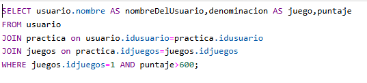

Cuarta Fase
Responsive
El diseño web adaptativo consiste en crear páginas web que se vean bien en todos los dispositivos.
Un diseño web responsivo se ajusta automáticamente a los distintos tamaños de pantalla y ventanas gráficas.
El diseño web adaptable consiste en utilizar HTML y CSS para redimensionar, ocultar, reducir o ampliar
automáticamente un sitio web para que se vea bien en todos los dispositivos (ordenadores de sobremesa,
tabletas y teléfonos)
Sesion de usuario
Las sesiones permiten almacenar datos del usuario en el servidor de forma temporal y segura.
Por ejemplo, datos como su nombre, ID de usuario, o incluso preferencias verificar la identidad
del usuario en cada página, ayudando a garantizar que solo los usuarios autorizados accedan a sus
respectivas cuentas y áreas restringidas.
Para esto se deben generar formularios que envien la informacion del usuario a la base de datos, esto
permite identificar que usuarios estan usando la aplicación y personalizar la aplicacion para cada
persona.
Exportar datos a Excel
La exportacion de los datos en Excel nos ayuda a manejar de una manera los datos que manejamos, realizar
de una forma rapida filtros, analisis,graficas, informes de la actividad de la aplicacion y apartir de esta
informacion se puede mejorar la experiencia del usuario con el fin de que mas personas conozcan y usen la
aplicacion.
En este caso se uso la aplicacion Composer. Composer es un sistema de gestión de paquetes para
programar en PHP el cual provee los formatos estándar necesarios para manejar dependencias y librerías
de PHP. En este caso el formato usado es XLSX para importar los datos de la base de datos a un excel.

Consultas multicriterio
En SQL se utilizan consultas con mas de un criterio para que la consulta sea mas especifica y la
informacion que se muestre sea la deseada. En el caso mostrado se selecciono el nombre del usuario,
el nombre del juego y el puntaje que obtuvo la persona, despues de esto se realiza el comando JOIN para
unir las tablas y por ultimo se decretan los criterios. El primer criterio es que tiene que ser el
juego que tiene el ID 1 y la segunda condicion es que el puntaje del jugador sea mayor a 600 puntos.

Encriptacion
Es un proceso mediante el cual se transforman los datos en un formato codificado, de modo que solo las
personas autorizadas con la clave adecuada pueden leerlos.
El metodo que se uso fue el hashing. Este convierte los datos en una cadena de longitud fija. Es un
proceso unidireccional, lo que significa que no se puede revertir para obtener el dato original.